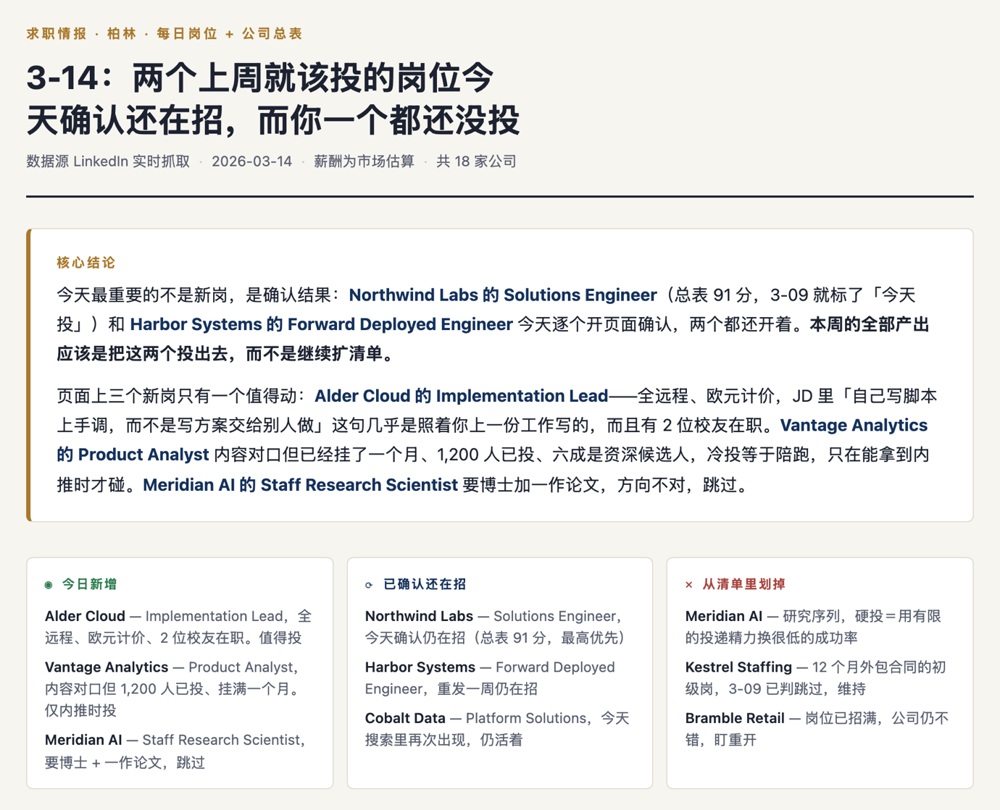
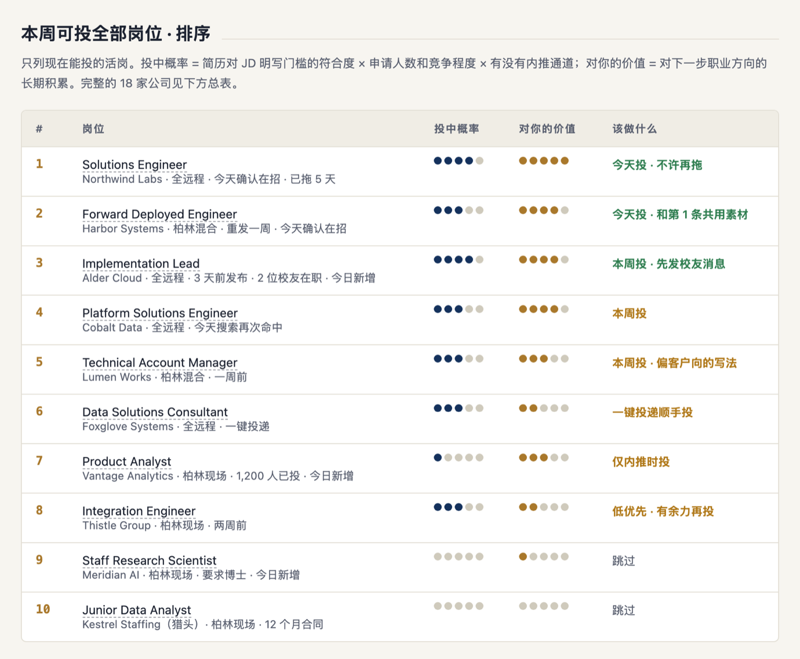
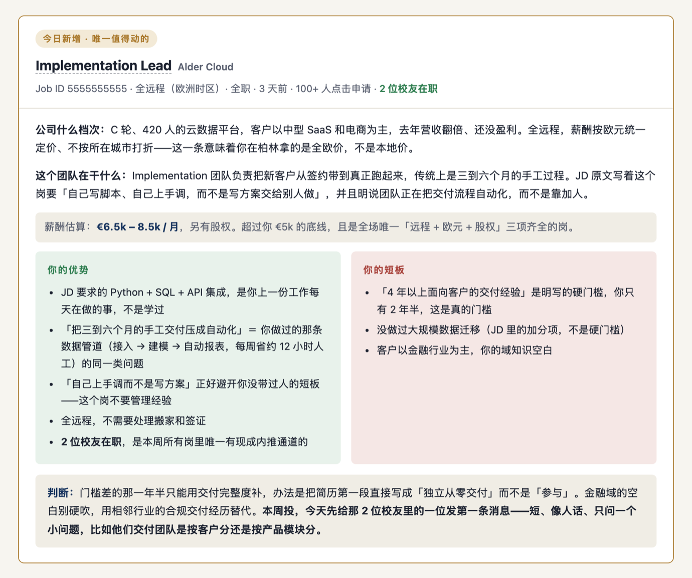
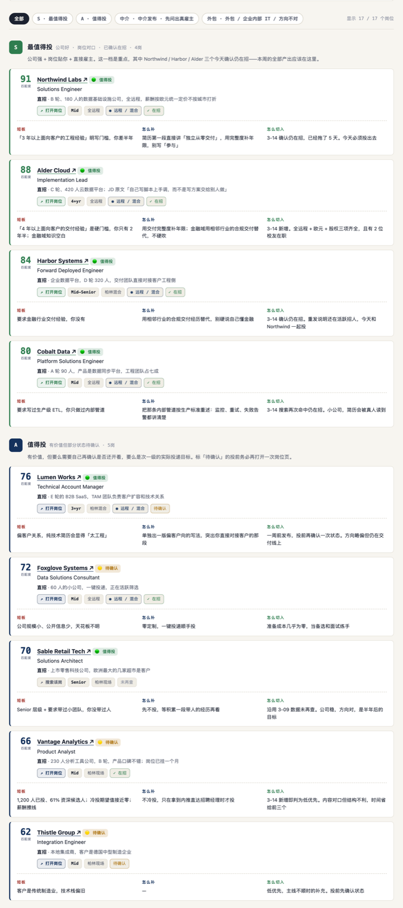
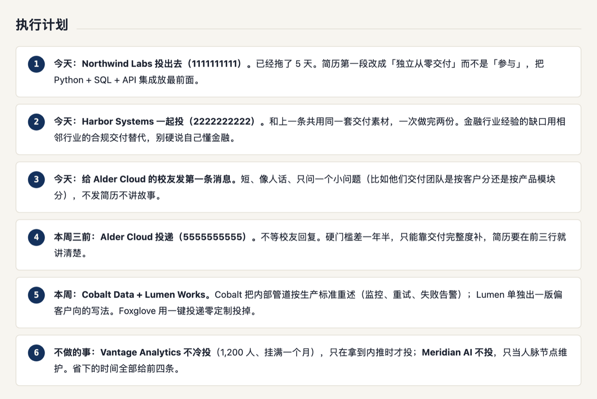

CLAUDE CODE SKILL
把一页 LinkedIn 岗位列表，变成一张对着你的简历算出来的求职看板。 给它简历和一个链接，它去把每个岗位的 JD 和公司资料真的抓下来，逐条对照你的经历， 判出匹配度、投中概率、你的优势、你的短板，以及今天该做什么。
git clone https://github.com/Bella-h12/job-match-board.git ~/.claude/skills/job-match-board
在 GitHub 上看 ↗
按竞价排的，不是按适合你排的
前三个都不该投，真正该投的排在你已经划走的位置。
按简历对得上什么 × 值不值得排
排第一的是你上周就该投、今天确认还开着的那个。不是新岗。
投简历最费时间的不是写简历，是判断该投哪个。一页十几个岗位，人工开 JD、查公司、对简历要两小时， 第二天全忘了——于是每天重读同样的岗位，真正该投的那个一直躺在待办里。 这个 skill 每天做的第一件事是复查旧待办还开不开着，然后才看新岗。

下面全部来自仓库里的示例数据，人物、公司、数字都是虚构的。




装好之后在 Claude Code 里直接说话，或者用 /job-match-board 触发。
profile.json 复用：薪酬底线（没有底线就判不了"擦线"还是"远超"）、地点与远程偏好、在找什么方向（决定哪些岗直接进不投清单）。currentJobId 和 originToLandingJobPostings 是唯一可靠的锚点，一个不落全抓。
分析产出一个 board.json，构建脚本负责把它变成 HTML。
所以你也可以手写 JSON 直接拿它当静态页生成器用，不经过 Claude。
构建脚本先校验再渲染，出错带位置：
构建失败：$.board[2].light = 'blue'，只能是 ['green', 'red', 'yellow'] 之一
16 条回归用例里有 11 条是反例——断言"这种输入必须报错"。每一条都撤掉对应的校验确认过它会变红：
只能变绿的测试教人忽略红色。
这些不是配置项，是这个工具的立场。
混在一起，竞价买来的排序会伪装成好机会。猎头能写出一份完美贴合你的 JD，那不代表那份工作存在。
明写的 required 就说是硬门槛，不安慰。简历里没有的经历不替你吹出来——面试会当场穿帮，代价比少投一个岗大得多。
当天真的开过页面确认的才标"在招"，沿用旧数据的标"未再查"。一个已经招满的岗位挂在第一位，比没有这张表更糟。
不用军事和游戏比喻（弹药、靶位、赛道、打法），不用行业黑话。"你的优势""你的短板""怎么切入"就够了。
一个上周就该投、今天确认还开着的好岗位，比三个新岗更重要。清单越滚越长是求职里最常见的自我安慰。